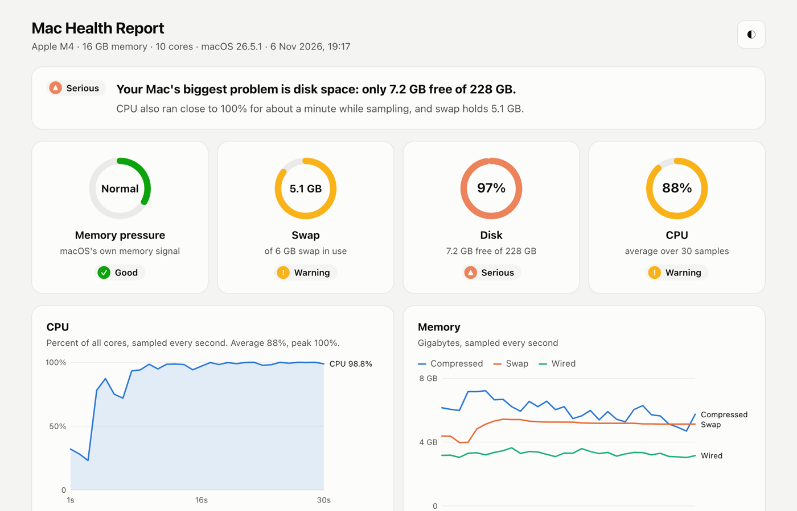

Ask your agent why your Mac is slow.
A skill for AI coding agents. It checks memory, swap, CPU, disk and the processes your agent sessions left running, then tells you what is slowing your Mac down and fixes it with your approval. Ask for a visual report and it draws animated charts in your browser.
Get it free on AgensiYour Mac is slow mainly because the disk is almost full: 2.6 GB free of 228 GB. With no room to grow swap, memory pressure is also high.
- Critical Disk 99% full. Docker holds 11 GB, caches 10 GB, npm and Gradle 10 GB.
- High 5.9 GB of swap on a 16 GB Mac. A virtual machine is holding 3.4 GB.
- Medium 6 Claude Code sessions still open, each running its own MCP server.
Want me to clear the npm cache (5 GB) first? I'll show what's removed before doing anything.
What it checks
Memory, the right way
Memory pressure, swap and compressed memory are the real signs a Mac is out of RAM. It ignores the misleading "free memory" figure.
The heaviest processes
Ranked by real memory use and by CPU, with plain explanations of common culprits like kernel_task, WindowServer, Spotlight, Docker and browser helpers.
What your agents left running
Dev servers, watchers, test runners and data jobs started by Claude Code, Codex, Gemini CLI or Cursor sessions, and which project each one belongs to.
Disk space
When the disk is low, it sizes the usual hogs: Docker, caches, npm, Gradle, Downloads and the Trash.
A visual report, on request
Ask for a visual report and the agent samples your Mac for 30 seconds, then opens an animated page in your browser: gauges for memory pressure, swap, disk and CPU, CPU and memory charts over time, and the biggest apps and folders. Hover any chart for exact values. It works in light and dark mode, and needs no internet connection.

Safe by design
- It only reads until you approve a fix. It makes no network calls and never uses
sudo. - The visual report is a single page saved in
/tmp. It loads nothing from the internet. - It asks before quitting, stopping or cleaning each item, one at a time.
- It never touches system processes such as kernel_task or WindowServer.
- It moves files to the Trash rather than deleting them, and prefers each tool's own cleanup command.
- For a heavy job an agent started, it writes a prompt for that agent's session so the job gets optimised instead of killed.
How to use it
- Add Agensi to your agent. See Agensi's setup guide.
- Add Mac Slowdown Doctor from Agensi. It's free.
- Ask your agent in plain words, for example:
After the fixes it checks again and shows the numbers before and after.
Catch it before it gets slow: SysWatch
The skill helps when you ask. SysWatch is its always-on companion, a free menu bar app for Mac from the same author.
- A green, orange or red dot with CPU and memory in your menu bar
- Alerts when memory, swap, CPU, threads or free disk cross your limits
- The app behind the slowdown named, with a one-click Quit
- One click on a Claude Code process copies a fix-it prompt for that session
curl -fsSL https://github.com/rishavkr08/SysWatch/releases/latest/download/install.sh | sh
Paste into Terminal to install it, or download SysWatch. Free, no tracking. macOS 14 or later, Apple silicon and Intel.